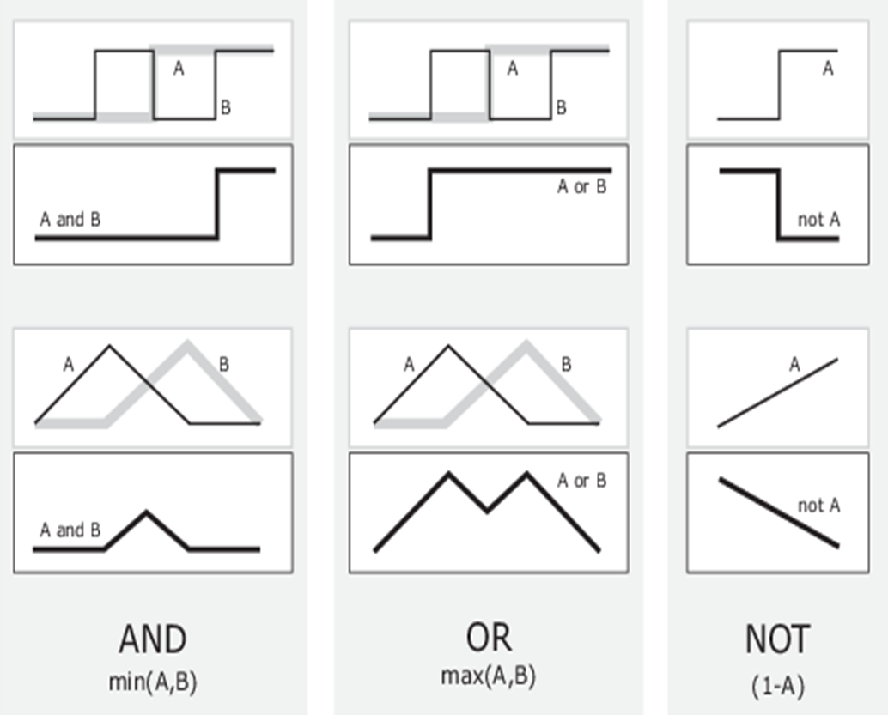

10 模糊综合评价
模糊综合评价法（Fuzzy Comprehensive Evaluation, FCE） 是一种基于模糊数学理论的综合评价方法，适用于处理具有模糊性和不确定性的多因素评价问题。该方法通过构建隶属函数，将定性指标转化为定量描述，有效刻画“亦此亦彼”的中间过渡状态，从而克服传统评价方法中“非黑即白”的二值判断局限，使评价结果更加贴近现实情况。
加载包：
10.1 模糊理论
10.1.1 模糊集与隶属度
用数学的眼光看世界，现象分为确定性现象、随机现象、模糊现象（如“今天天气有点冷”，“小伙子很高”等）。模糊理论的基本思想是，用属于程度代替属于或不属于，比如某人属于高个子的程度为 \(0.8\)）。
经典集合语言：
只有两种情况，要么 \(x \in A\)，要么 \(x \notin A\)，用特征函数 \(\chi (\cdot) : A \to \{ 0, 1\}\) 表示： \[ \chi(x) = \left\{ \begin{array}{ll} 1, & x \in A \\ 0, & x \notin A \end{array} \right. \]
模糊集合语言：
用隶属度函数 \(\mu_A(\cdot): A \to [0,1]\) 表示，它确定了 \(X\) 上的一个模糊集 \(A\)。\(\mu_A(x)\) 越接近 \(1\)，表明 \(x\) 属于 \(A\) 的程度越大。
一般用 \(A(x)\) 表示 \(x\) 对模糊集 \(A\) 的隶属度。
注：模糊集与隶属函数，是一一对应的，是同一个事物的两种表示。
例 1 考虑全集：\(\text{周几} = \{\text{周一},\text{周二},\cdots,\text{周日}\}\)。
- 在经典集语义下说，子集：\(\text{周末} = \{\text{周六}, \, \text{周日}\}\)
- 周几是否属于周末是完全确定的：是或否
- 从非周末到周末，是突变过去的
- 从实际来说，周末并没有严格的界限，周五、周一甚至周四都有一部分也属于周末。这正好符合模糊集语义：
- 周几是否属于周末，可能是完全属于、部分属于、完全不属于，比如 \(\text{周五属于周末的程度} = 0.8\)
- 从非周末到周末，是连续变化过去的

10.1.2 隶属函数
隶属函数 \(\mu_A(x), x \in X\) 将 \(X\) 中每个元映射到 \([0,1]\) 上某个隶属度值。
例如，上面右图就是周几隶属于周末的程度的隶属函数曲线，根据该函数可以计算无论周几的任一时刻属于周末的程度是多少。
隶属函数是任意曲线，其形状可以人为定义，只要简单、方便、快速和高效。 准确地确定隶属函数是定量刻化模糊概念的基础，也是利用模糊方法解决各种实际问题的关键。
常用隶属函数确定方法：模糊统计法，主观/专家经验法，二元对比排序法，拟合模糊分布法，最小模糊度法。
10.1.2.1 模糊统计法
模糊统计法，是基于评委评语/打分的数据统计，这是 tidyverse 最擅长的。
1. 从评委打分/评语数据到隶属矩阵
例如，模糊综合评价衣服的评语集为：“差”、“一般”、“好”。评委直接给出若干评价对象（衣服）各指标的评语，当然评委也可以是打分，根据分数阈值离散化到各评语。
这样的数据，不需要隶属函数，做分组统计就能得到隶属向量。
比如，某件衣服，对于色彩，经过统计发现：\(80\%\) 的评委认为是 “好”，\(10\%\) 的评委认为是”一般”，\(10\%\) 的评委认为是”差”。
则该件衣服的色彩隶属于评语集每个评语：“好”、“一般”、“差”的隶属度，即隶属向量为：\([0.8, 0.1, 0.1]\)
同理，处理其他指标：做工、品牌、款式。
下面随机生成了一个数据作为演示，包含 \(10\) 个评委对 \(3\) 件衣服上述 \(4\) 个指标的打分：
第一步，先宽变长变整洁，根据阈值，比如 \([60, 75]\) 离散化为评语：
df = df |>
pivot_longer(-(1:2), names_to = "评委", values_to = "打分") |>
mutate(评语 = case_when(打分 < 60 ~ "差",
打分 < 75 ~ "一般",
.default = "好"),
评语 = factor(评语, levels = c("差","一般","好")))
df# A tibble: 120 × 5
ID 指标 评委 打分 评语
<int> <chr> <chr> <int> <fct>
1 1 颜色 评委1 97 好
2 1 颜色 评委2 66 一般
3 1 颜色 评委3 99 好
4 1 颜色 评委4 31 差
5 1 颜色 评委5 42 差
6 1 颜色 评委6 80 好
7 1 颜色 评委7 77 好
8 1 颜色 评委8 66 一般
9 1 颜色 评委9 36 差
10 1 颜色 评委10 46 差
# ℹ 110 more rows第二步，数据统计：分组汇总评语频数，分组计算评语百分比
# A tibble: 35 × 5
ID 指标 评语 n p
<int> <chr> <fct> <int> <dbl>
1 1 做工 差 2 0.2
2 1 做工 一般 7 0.7
3 1 做工 好 1 0.1
4 1 品牌 差 6 0.6
5 1 品牌 一般 3 0.3
6 1 品牌 好 1 0.1
7 1 款式 差 3 0.3
8 1 款式 一般 3 0.3
9 1 款式 好 4 0.4
10 1 颜色 差 4 0.4
# ℹ 25 more rows第三步，整理结果得到每件衣服的隶属矩阵
第二步已经计算出了所有隶属向量中的元素，只不过是堆在了一列 p 当中。每件衣服的取出来，每个评语的占一列，就是隶属矩阵。需要做的就是：按衣服切分 + 长变宽。
先把一件衣服做长变宽，写成函数：
再按衣服切分数据，批量地做长变宽：
$`1`
# A tibble: 3 × 4
做工 品牌 款式 颜色
<dbl> <dbl> <dbl> <dbl>
1 0.2 0.6 0.3 0.4
2 0.7 0.3 0.3 0.2
3 0.1 0.1 0.4 0.4
$`2`
# A tibble: 3 × 4
做工 品牌 款式 颜色
<dbl> <dbl> <dbl> <dbl>
1 0.3 0.4 0.3 NA
2 0.3 0.3 0.4 0.5
3 0.4 0.3 0.3 0.5
$`3`
# A tibble: 3 × 4
做工 品牌 款式 颜色
<dbl> <dbl> <dbl> <dbl>
1 0.4 0.5 0.5 0.6
2 0.1 0.1 0.3 0.1
3 0.5 0.4 0.2 0.32. 从评委区间数据到隶属函数
这是模糊理论中理解隶属函数的经典示例，根据关于“青年人”年龄区间调查表，确定“青年人”的隶属函数。
该表记录了 129 位专家关于“青年人”年龄区间的调查结果。
# A tibble: 10 × 13
g1 g2 g3 g4 g5 g6 g7 g8 g9 g10 g11 g12 g13
<chr> <chr> <chr> <chr> <chr> <chr> <chr> <chr> <chr> <chr> <chr> <chr> <chr>
1 18−25 18−30 17−30 20−35 15−28 18−25 18−35 19−28 17−30 16−30 15−28 15−25 16−28
2 18−30 18−25 18−28 17−30 15−30 18−30 18−35 15−25 17−25 17−30 18−35 18−25 18−30
3 16−28 18−30 18−35 15−30 18−35 15−28 15−25 16−32 18−30 18−35 17−30 18−35 16−28
4 20−30 16−30 18−35 18−35 18−29 17−28 18−35 18−35 18−25 18−30 16−28 17−27 15−26
5 16−35 18−35 15−25 15−27 18−35 16−30 14−25 18−25 18−30 20−30 18−28 18−30 15−30
6 18−28 18−25 16−25 20−30 18−35 18−30 18−30 16−28 17−25 16−30 18−30 15−25 18−35
7 18−30 18−28 18−26 16−35 16−28 16−25 15−35 17−30 15−25 16−35 15−30 18−30 15−25
8 16−30 16−30 15−28 15−36 15−25 17−28 18−30 16−25 18−30 17−25 18−29 17−29 15−30
9 17−30 16−30 16−35 15−30 14−25 18−35 16−30 18−30 18−35 16−28 18−25 18−30 18−28
10 18−35 16−24 18−30 17−30 15−30 18−35 18−25 18−30 15−30 15−30 17−30 18−30 <NA> 第一步，数据处理：宽变长（忽略缺失）、分割列（转化数值）
df = df |>
pivot_longer(everything(), names_to = "g", values_to = "x",
values_drop_na = TRUE) |>
separate(x, c("x1", "x2"), sep = "−", convert = TRUE) |>
select(-g)
df# A tibble: 129 × 2
x1 x2
<int> <int>
1 18 25
2 18 30
3 17 30
4 20 35
5 15 28
6 18 25
7 18 35
8 19 28
9 17 30
10 16 30
# ℹ 119 more rows这样就得到了，每位专家认为的属于“青年人”的最小年龄和最大年龄。
第二步，构建隶属函数
“青年人”的隶属函数，就是包含年龄 x 的年龄区间（最小年龄和最大年龄之间）的占比：
有一个或多个年龄，都能计算隶属度：
可视化该“青年人”隶属函数：

10.1.2.2 主观/专家经验法
主观/专家经验法，是由领域专家根据经验或直观判断直接设定隶属函数的形式和参数，无需依赖数据统计或复杂计算。
比如，常用的三角隶属函数、梯形隶属函数、高斯隶属函数：


隶属度函数的理解：以梯形隶属度函数为例，比如某指标值最优区间是 \([5,10]\)，则落在该区间内的该指标值，我们认为都是“最优”的，但 \(4.7\) 呢？我们不希望从 \(5\) 直接就到不是”最优”，而是让它们有一个自然的过度，比如取 \([4,5]\) 和 \([10,11]\) 线性过度到不是”最优”，那么关于 \(4.7\) 这个点，有 \(\dfrac{4.7-4}{5-4}=0.7\)，即 \(4.7\) 隶属于最优区间 \([5,10]\) 的程度是 \(0.7\)。
另外，还有双高斯隶属函数、广义贝尔隶属函数、Sigmoid 隶属函数族（单 Sigmoid、两 Sigmoid 之差、两 Sigmoid 之积）、多项式隶属函数族（分别形如\(Z,\bar{\pi},S\)）。
mathmodels 包提供了上述所有隶属函数的实现，以及可视化隶属函数的函数：
其中，x 为数值向量，params 为各隶属函数相应参数值向量，返回与 x 同样长度的隶属度值。
以梯形隶属函数为例，包含 \(4\) 个参数，比如取 1,5,7,8，计算 1:10 的隶属度值：
可视化该梯形隶属函数：

10.1.3 compute_mf() 函数
将单个指标值转化为属于各评语的隶属向量，是模糊综合评价计算隶属矩阵最核心的、大量重复使用的计算步。而非常常见且合理的做法，就是 三角+梯形隶属函数法 ，或叫做 分段线性隶属函数法。
mathmodels 包提供了 compute_mf() 函数，实现基于三角隶属（两端是半梯形）将单个指标值转化为属于各评语的隶属向量，基本语法为：
-
x为单个指标值； -
thresholds为指标值划分到各评语的中间界限构成的向量（长度至少为 \(2\)） - 返回
mv为隶属向量，对应单个评价对象的单个指标值。
用法示例
举个例子，大气污染物评价，其中 SO2 的四个等级阈值为：
| 污染物 | 一级 | 二级 | 三级 | 四级 |
|---|---|---|---|---|
| SO2 | 0.05 | 0.15 | 0.25 | 0.50 |
这表示：\(≤ 0.05\) 是一级（\(100\%\) 隶属），\(0.15\) 是二级，\(0.25\) 是三级，\(≥ 0.50\) 是四级；中间区间线性从 \(1\) 减到 \(0\)，比如 \([0.05, 0.15]\) 一级的隶属度是从 \(1\) 线性降到 \(0\)，二级隶属是从 \(0\) 线性升到 \(1\)，其他类似。
结合函数图形来理解更加直观。为了便于可视化演示，顺便提供了 compute_mf_funs 函数返回所有隶属函数，再用 plot_mf 函数做可视化：
th = c(0.05, 0.15, 0.25, 0.50)
mfs = compute_mf_funs(th)
plots = lapply(mfs, \(x) plot_mf(x, xlim = c(0, 0.6)))
gridExtra::grid.arrange(grobs = plots, nrow = 2)
分别是一级、二级、三级、四级的隶属函数，形状依次为右半梯形、三角形、三角形、左半梯形。以右上“二级”隶属函数为例，0.15 处为 1，区间 [0.05, 0.15] 上线性增长到 1。
比如，某天的 SO2 含量为 0.07，转化为隶属向量：
这 4 个值，就是将 0.07 分别代入上述 4 个隶属函数得到的函数值构成。这表明，0.07 隶属于“一级”的程度是 0.8，隶属于“二级”的程度是 0.2，隶属于后两级的程度都是 0。
10.1.4 模糊运算
10.1.4.1 模糊逻辑运算
经典集特征函数值只取 \(0\) 和 \(1\)，标准布尔逻辑运算：与、或、非

换个写法：与 就是取 \(\min\)，或 就是取 \(\max\)，非就是做 \(1-x\)

从经典集的布尔运算到模糊集的模糊运算，模糊集的隶属函数取值是 \([0,1]\)。
模糊集与隶属函数（曲线）一一对应，所以，很自然地，模糊集的逻辑运算，就等同于隶属函数（曲线）的逻辑运算（取 \(\min\)、取 \(\max\)、做 \(1-x\)）。

10.1.4.2 模糊合成
设 \(R=(r_{ij})_{m\times n}\) 为矩阵，若满足 \(0\leq r_{ij}\leq 1\)，称为模糊矩阵，若 \(r_{ij}\) 只取 \(0\)或 \(1\) 时，称为布尔矩阵。
模糊综合评价涉及模糊变换，即将模糊评价矩阵作用到向量，得到新向量： \[ B_{m\times1}=R_{m\times n}\circ A_{n\times1} \] 其中，\(\circ\) 为模糊合成算子，记 \(A=[a_1,\cdots,a_m]^T, \, B=[b_1,\cdots,b_m]^T\)。
模糊变换根据目的不同，可以选择不同的模糊合成算子：
(1) 取小取大，主因素决定型
\[ b_j = \max_i\big\{\min \{a_i,r_{ij}\}\big\},\quad j=1,\cdots,m \] 通常用的算子，其评判结果只取决于在总评价中起主要作用的那个因素，其余因素均不影响评判结果，比较适用于单项评判最优就能作为综合评判最优的情况。
(2) 乘积最大，主因素突出型
\[ b_j=\max_i \{a_i\cdot r_{ij} \},\quad j=1,\cdots,m \]
与取小取大相近，但更精细些，不仅突出了主要因素，也兼顾了其他因素。此模型适用于模型失效（不可区别），需要“加细”的情况。
(3) 乘加，加权平均型
\[ b_j=\sum_{i=1}^n a_i \cdot r_{ij}, \quad j=1,\cdots,m \] 该算子依权重的大小对所有因素均衡兼顾，比较适用于求总和最大的情形。
(4) 取小上界和型
\[ b_j = \min\Big\{1,\sum_{i=1}^n \min \{a_i,r_{ij} \}\Big\}, \quad j=1,\cdots,m \] 在使用此算子时，需要注意：各个 \(a_i\) 不能取得偏大，否则可能出现 \(b_j\) 均等于 \(1\) 的情形；各个 \(a_i\) 也不能取得太小，否则可能出现 \(b_j\) 均等于各个 \(a_i\) 之和的情形，这将使单因素评判的有关信息丢失。
(5) 均衡平均型
\[ b_j = \sum_{i=1}^n \Big(a_i \wedge \frac{r_{ij}}{r_0}\Big), \quad j=1,\cdots,m \] \(r_{0}=\sum\limits_{k=1}^{m}r_{kj}\)，该算子实际上先对模糊评价矩阵 \(R\) 中的列向量做了归一化处理, 适用于 \(R\) 中元素偏大或偏小的情形。
mathmodels 包提供了 fuzzy_eval() 函数实现模糊合成，基本语法为：
-
w为各因素的权重向量，R为模糊评价矩阵，type可选上述 \(5\) 种模糊合成算子：\(1 \sim 5\)。
10.2 模糊综合评价算法步骤
(1) 确定因素集及权重向量
设某评价对象的评价因素有 \(n\) 个，记作 \(U=\{u_1,\cdots,u_n\}\)，称为因素集。由于各种因素所处地位和作用的不 同，考虑用权重向量来衡量，实际中该权重向量可以借助主客观赋权法来得到。
例如，某人要购买一件衣服，她要考虑 4 个因素： \[ u_1=\text{色彩},\quad u_2 =\text{做工}, \quad u_3=\text{品牌},\quad u_4=\text{款式} \]
4 个因素在评价过程中的权重向量为 \(w = [0.3,0.3,0.3,0.1]^T\)。
(2) 确定评语集
设所有可能的评语有 \(m\) 个，记为 \(V=\{v_1,⋯,v_m\}\)，称为评语集。
例如，对衣服的评语集为 \[ v_1=\text{好}, \quad v_2=\text{一般}, \quad v_3=\text{差} \]
(3) 建立模糊评价矩阵
先对该事物的每个因素隶属于各个评语的程度进行评价（评委打分或经验隶属函数）。
例如，某件衣服，对于”色彩”，\(80\%\) 的评委认为是“好”，\(10\%\) 的评委认为是”一般”，\(10\%\) 的评委认为是”差”。
则该件衣服因素 1：“色彩”隶属于评语集每个评语：“好”、“一般”、“差”的隶属度为：\(r_1=[0.8,0.1,0.1]^T\)；
同样，因素 2：“做工”隶属于每个评语：“好”、“一般”、“差”的隶属度为：\(r_2=[0.7,0.2,0.1]^T\)；
因素 3：“品牌” 隶属于每个评语：“好”、“一般”、“差”的隶属度为：\(r_3=[0.6,0.2,0.2]^T\)；
因素 4：“款式” 隶属于每个评语：“好”、“一般”、“差”的隶属度为：\(r_{4}=[0.7,0.1,0.2]^{T}\)。
于是，得到模糊评价矩阵： \[ R = [r_1,r_2,r_3,r_4] = \begin{bmatrix} 0.8&0.7&0.6&0.7\\ 0.1&0.2&0.2&0.1\\ 0.1&0.1&0.2&0.2 \end{bmatrix} \]
(4) 做模糊综合合成
基于合适的模糊合成算子，比如选 3 加权平均型，做模糊合成得到模糊评价向量：\(\mu=R\circ w\)，一般对 \(\mu\) 进 行归一化处理。
这里的 \(R\) 是分别的、单独的评价（隶属程度），再综合各因素占的权重 \(w\)，所以叫做模糊综合评价。
(5) 去模糊化得到最终评价
模糊评价向量 \(\mu\) 是这件衣服对各评语：“好”、“一般”、“差”的隶属度，要得到最终评语或评分，还需要做一步去模糊化。
mathmodels 包，提供了 defuzzify() 函数，实现对模糊评价向量去模糊化，基本语法为：
-
mu为模糊评价向量； -
scores为各评语的量化分数； -
method选择去模糊化方法，可选"max_membership"：最大隶属度法（隶属度最大值对应评语的量化分数）、"weighted_average"：加权平均法（默认，隶属度值与各评语量化分数做加权求和）、"centroid"：重心法。
注：对于归一化的模糊评价隶属向量，加权平均法与重心法结果是相同的。
10.3 案例：耕作方案的模糊综合评价
某平原产粮区进行耕作制度改革，制定了甲（三种三收）、乙（两茬平作）、丙（两年三熟）3 种方案。主要评价指标选取 5 项：粮食亩产量、农产品质量、每亩用工量、每亩纯收入、生态环境影响。根据当地实际情况，这 5 个因素的权重分别为 \(0.2, 0.1, 0.15, 0.3, 0.25\)，其评价等级如表 1 所示：
| 分数 | 亩产量/kg | 产品质量/级 | 亩用工量/工日 | 亩纯收入/元 | 生态环境影响/级 |
|---|---|---|---|---|---|
| 优 | 550 以上 | 1 | 20 以下 | 130 以上 | 1 |
| 良 | 450-550 | 2 | 20-40 | 90-130 | 2 |
| 中 | 350-450 | 3 | 40-60 | 50-90 | 3 |
| 差 | 350 以下 | 4 | 60 以上 | 50 以下 | 4 |
经过调查并应用各种参数进行计算预测，发现 3 种方案的 5 项指标可达到表 2 中的数值：
| 方案 | 亩产量/kg | 产品质量/级 | 亩用工量/工日 | 亩纯收入/元 | 生态环境影响/级 |
|---|---|---|---|---|---|
| 甲 | 592.5 | 3 | 55 | 72 | 4 |
| 乙 | 529 | 2 | 38 | 105 | 3 |
| 丙 | 412 | 1 | 32 | 85 | 2 |
问究竟应该选择哪种方案？
模糊综合评价，超级简洁、可以随便替换成自己数据的通用流程如下：
-
compute_mf函数是根据指标阈值和单个指标值，计算隶属向量； - 批量调用
compute_mf函数，对一个评价对象（耕作方案）的所有指标值和相应指标阈值，都算一遍再合并，就计算出隶属矩阵； - 隶属矩阵和指标权重向量做模糊综合合成（
fuzzy_eval函数），就得到模糊综合评价结果向量，再去模糊化（defuzzify函数）到最终评价分数； - 再对每个评价对象重复上述过程。
下面具体求解。
10.3.1 准备评价对象数据（表2）
df = tibble(product = c(592.5, 529, 412), quality = 3:1,
labor = c(55, 38, 32),
income = c(72, 105, 85), ecology = 4:2)
df# A tibble: 3 × 5
product quality labor income ecology
<dbl> <int> <dbl> <dbl> <int>
1 592. 3 55 72 4
2 529 2 38 105 3
3 412 1 32 85 2数据预处理
注意，产品质量、亩用工量、生态环境影响是负向指标，需要转化为正向。应该从固定不变的阈值考虑（而不是可变的具体方案指标值），采用最大值 + 平移值做差 方式。 比如，1、2、3、4 要变成 4、3、2、1，需要的变换是 \(5 - x\)；而 20、40、60 要变成 60、40、20，需要的变换是 \(80 - x\)
10.3.2 准备阈值数据（从表1提炼，用于计算隶属向量）
评语集是分数列，对应到优良中差：3（优）、2（良）、1（中）、0（差）。 注意，共有 4 个评语，需要 4 个阈值（同示例）。产品质量和生态环境是 \(1, 2, 3, 4\)（可以直接用），其他三个，比如亩产量只提供了 3 个阈值：\(350, 450, 550\)，显然在前面补一个 \(0\) 是合理的。
10.3.3 批量模糊综合评价
本例只有 3 个评价对象，当然可以一个一个地分别计算。
为了通用于任意多个评价对象，把对一个评价对象做模糊综合评价的写成函数：
其中，type 选择模糊合成的方法，可选 1：取小取大（主因素决定）、2： 乘积最大（主因素突出）、3：乘加（加权平均）、4： 取小上界和、5： 均衡平均。 method 选择去模糊化方法，可选 "max_membership"：最大隶属度法、"weighted_average"：加权平均法、"centroid"：重心法。
注：对于归一化的模糊评价隶属向量，加权平均法与重心法结果是相同的。
准备共用数据：
方法 1：按默认的 乘加法 模糊合成，按最大隶属度法去模糊化。
在 df 上逐行迭代即可：
查看 3 种方案的模糊综合评价结果向量：
[[1]]
[1] 0.2500 0.3475 0.2025 0.2000
[[2]]
[1] 0.0000 0.2500 0.4645 0.2855
[[3]]
[1] 0.0000 0.1135 0.7265 0.1600查看 3 种方案的最终得分（上述模糊向量去模糊化），最大隶属度法即最大值所属评语的量化分数：
- 查看 3 种方案的隶属矩阵，由隶属向量构成：
[[1]]
# A tibble: 4 × 5
product quality labor income ecology
<dbl> <dbl> <dbl> <dbl> <dbl>
1 0 0 0 0 1
2 0 1 0.75 0.45 0
3 0 0 0.25 0.55 0
4 1 0 0 0 0
[[2]]
# A tibble: 4 × 5
product quality labor income ecology
<dbl> <dbl> <dbl> <dbl> <dbl>
1 0 0 0 0 0
2 0 0 0 0 1
3 0.21 1 0.9 0.625 0
4 0.79 0 0.1 0.375 0
[[3]]
# A tibble: 4 × 5
product quality labor income ecology
<dbl> <dbl> <dbl> <dbl> <dbl>
1 0 0 0 0 0
2 0.38 0 0 0.125 0
3 0.62 0 0.6 0.875 1
4 0 1 0.4 0 0方法 2：按默认的乘加法模糊合成，按加权平均法去模糊化。
对 df 逐行迭代，只查看 3 种方案的最终评分：